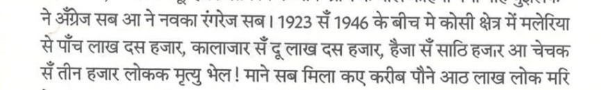
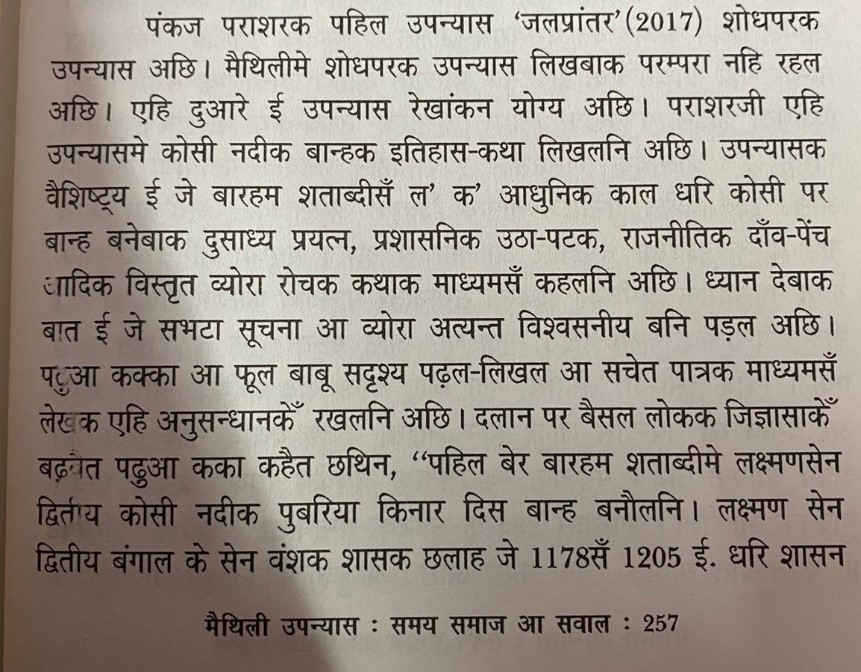
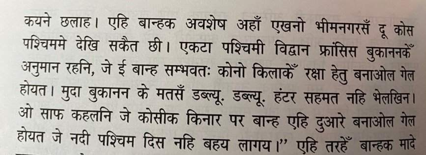
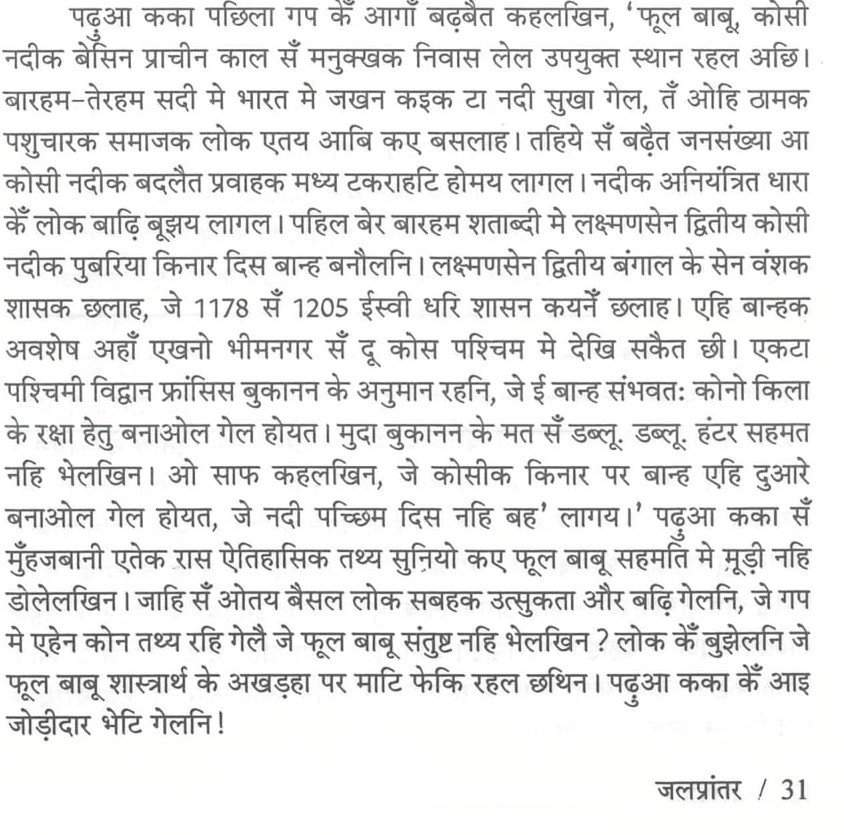
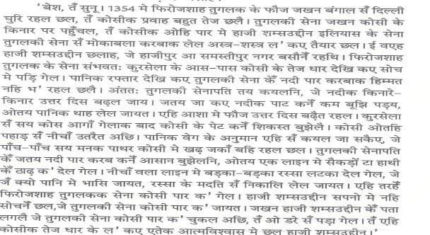

विदेह प्रथम मैथिली पाक्षिक ई पत्रिका
🔍 स्थानीय खोज — अन्वेषणक सभ प्रविष्टि खोजू
Search for Information relating to Mithila/ Maithili
सूचना
विदेह इण्डेक्स (विदेह १-४४० आ सदेह १-३७ केर रचनाक अनुक्रमणिका)
विदेह इण्डेक्स (विदेह १-४४० आ सदेह १-३७ केर रचनाक अनुक्रमणिका)
विदेह १-४४० इण्डेक्स डाउनलोड सदेह १-३७ इण्डेक्स डाउनलोड
विदेह १-४४० इण्डेक्स डाउनलोड सदेह १-३७ इण्डेक्स डाउनलोड
विदेह आ सदेह दुनू (सभटा अंक)
विदेह आ सदेह दुनू (सभटा अंक)
Do not judge each day by the harvest you reap but by the seeds that you plant.
- Robert Louis Stevenson ............................................
Videha: Maithili Literature Movement
Videha eJournal (link w ww.videha.co.in ) is a multidisciplinary online journal dedicated to the promotion and preservation of the Maithili language, literature and culture. It is a platform for scholars, researchers and writers to publish their works and share their knowledge about Maithili language, literature, and culture. The journal is published online to promote and preserve Maithili language and culture. The journal publishes articles, research papers, book reviews, prose and verse in Maithili and English languages. It also features translations of literary works from other languages into Maithili and from Maithili into English. It is a peer-reviewed journal, which means that articles and papers are reviewed by experts in the field before they are accepted for publication.
www.videha.co.in

"विदेहक जीवित लेखक-सम्पादक, आन्दोलनी, सार्वजनिक जीवन जीनिहार, कला-संगीत-रंगमंचकर्मी आ रंगमंच-निर्देशक पर विशेषांक शृंखला"
विदेह अरविन्द ठाकुर विशेषांक
विदेह अरविन्द ठाकुर विशेषांक
स्वतंत्रचेता - अरविन्द ठाकुर : व्यक्तित्व - कृतित्व ( सम्पादक आशीष अनचिन्हार ) [ विदेह अरविन्द ठाकुर विशेषांकक प्रिण्ट रूप ]
स्वतंत्रचेता - अरविन्द ठाकुर : व्यक्तित्व - कृतित्व ( सम्पादक आशीष अनचिन्हार ) [ विदेह अरविन्द ठाकुर विशेषांकक प्रिण्ट रूप ]
विदेह जगदीश चन्द्र ठाकुर अनिल विशेषांक
विदेह जगदीश चन्द्र ठाकुर अनिल विशेषांक
विदेह रामलोचन ठाकुर विशेषांक
विदेह रामलोचन ठाकुर विशेषांक
विदेह राजनन्दन लाल दास विशेषांक
विदेह राजनन्दन लाल दास विशेषांक
विदेह रवीन्द्र नाथ ठाकुर विशेषांक
विदेह रवीन्द्र नाथ ठाकुर विशेषांक
विदेह केदार नाथ चौधरी विशेषांक
विदेह केदार नाथ चौधरी विशेषांक
विदेह प्रेमलता मिश्र प्रेम विशेषांक
विदेह प्रेमलता मिश्र प्रेम विशेषांक
विदेह शरदिन्दु चौधरी विशेषांक
विदेह शरदिन्दु चौधरी विशेषांक
विदेह कला - विमर्श विशेषांक ( सन्दर्भ - संजू दास , कृष्ण कुमार कश्यप , शशिबाला , एस . सी . सुमन आ श्वेता झा चौधरी )
विदेह कला - विमर्श विशेषांक ( सन्दर्भ - संजू दास , कृष्ण कुमार कश्यप , शशिबाला , एस . सी . सुमन आ श्वेता झा चौधरी )
विदेह रचनाकार अशोक विशेषांक
विदेह रचनाकार अशोक विशेषांक
विदेह राम भरोस कापड़ि ' भ्रमर ' विशेषांक
विदेह राम भरोस कापड़ि ' भ्रमर ' विशेषांक
विदेह लक्ष्मण झा 'सागर' विशेषांक
विदेह लक्ष्मण झा 'सागर' विशेषांक
विदेह नरेन्द्र झा विशेषांक
विदेह नरेन्द्र झा विशेषांक
विदेह भाषाविद् रामावतार यादव विशेषांक
विदेह भाषाविद् रामावतार यादव विशेषांक
विदेह हितनाथ झा विशेषांक
विदेह हितनाथ झा विशेषांक
विदेह नारायणजी चौधरी विशेषांक
विदेह नारायणजी चौधरी विशेषांक
विदेह शिवशंकर श्रीनिवास विशेषांक
विदेह शिवशंकर श्रीनिवास विशेषांक
विदेह भवनाथ झा विशेषांक
विदेह भवनाथ झा विशेषांक
जतबे बुझलहुँ ततबे लिखलहुँ (अजित कुमार झा)
जतबे बुझलहुँ ततबे लिखलहुँ (अजित कुमार झा)
नबोनारायण मिश्र समग्र
नबोनारायण मिश्र समग्र
विदेह अपन जीवित लेखक-सम्पादक , आन्दोलनी , सार्वजनिक जीवन जीनिहार , रंगमंचकर्मी आ रंगमंच-निर्देशक पर विशेषांक शृंखलाक अन्तर्गत (१)अरविन्द ठाकुर , ( २)जगदीश चन्द्र ठाकुर अनिल , ( ३)रामलोचन ठाकुर , ( ४) राजनन्दन लाल दास , ( ५)रवीन्द्र नाथ ठाकुर , ( ६) केदार नाथ चौधरी , ( ७) प्रेमलता मिश्र ' प्रेम ', ( ८) शरदिन्दु चौधरी , ( ९) रचनाकार अशोक , (१०) राम भरोस कापड़ि ' भ्रमर ' , (११) लक्ष्मण झा 'सागर' (१२) नरेन्द्र झा, (१३) भाषाविद् रामावतार यादव, (१४) हितनाथ झा , (१५) नारायणजी चौधरी, (१६) शिवशंकर श्रीनिवास आ (१७) भवनाथ झा विशेषांक निकालने अछि। ऐ मे सँ रामलोचन ठाकुर, राजनन्दन लाल दास, रवीन्द्र नाथ ठाकुर, केदार नाथ चौधरी आ शरदिन्दु चौधरी आब हमरा सभक बीच नै छथि। शेष सभ गोटे केर स्टेटस विदेहमे 'लाइफटाइम फेलो' सन रहत। ओ अपन नव रचना (कथा, कविता बा कथेतर गद्य-पद्य) बा नव पोथी बा नव प्रोडक्शन [रंगमंच, सड़क नाटक बा अन्य कोनो (ऑडियो-विजुअल सहित)] जे विशेषांक निकललाक बादक हुअय बा विदेहपर नै हुअय पठा सकै छथि। ओकर हम समीक्षा सहित ई-प्रकाशन करब आ ओइपर पाठक, स्रोता, द्रष्टाक मध्य सम्वादक प्रारम्भ लेल प्रस्तुत करब।
"विदेहक जीवित लेखक-सम्पादक, आन्दोलनी, सार्वजनिक जीवन जीनिहार, कला-संगीत-रंगमंचकर्मी आ रंगमंच-निर्देशक पर विशेषांक शृंखला" क चयन प्रक्रियाक विधि निम्न प्रकारसँ अछि।
निअम:
१) लगभग पाँच-छह मास पहिनेसँ विदेह अपन पाठककेँ सुझाव देबा लेल लेल सूचना दैत अछि।
२) आएल सुझावमेसँ विदेह मात्र जी वि त लोक क चयन करैत अछि।
३) ऐ सभ लोकक लेखन/ काज एवं आचरणक साम्यता देखल जा इत अछि । जिनकर लेखन / काज ओ आचरणमे बेसी साम्यता (कम फाँक) भेटैए तेहन छह टा नाम चयनित होइत अछि।
४) छह नाम एलापर ई तुलना कएल जाइत छै जे ई छहो गोटेकेँ लेखन/ काज क एवजमे समाजसँ की भेटलनि।
५) जिनका सभसँ कम भेटल बुझाइत अछि त इ तीन लोक केँ अगिला चरण लेल राखि लेल जाइत अछि ।
६) ऐ तीन चयनित जी वि त लोक क रचना, काज आ उ द्दे श्य आदिक बीचमे परस्पर तुलना कएल जाइत अछि ।
७) अंतिम रूपसँ विदेह द्वारा एकटा नाम चुनि सालक अंतमे घोषणा कएल जाइत अछि आ नियत समयपर ई विशेषांक निकालबाक प्रयास क एल जाइत अछि ।
प्रश्न उठि सकैए जे की ऊ पर का नि अ म एहन छै ज इ मे अंतिम रूपसँ सभ सुयोग्य जीवित लोक केर चयन समयपर भ़ऽ जेतनि? तऽ एकर उत्तर छै नै। विदेहक पाठक लग सेहो अपन सीमा छनि। मुदा अही सीमाक संगे हमरा सभकेँ अपन बेस्ट देबाक अछि आ मैथिली लेल एकटा एहन रस्ता बना देबाक छै ज इ सँ आब य बला ५००-६०० बर्खक साहित्य विदेहक लीकसँ प्रेरणा पाब य ।
अही विचारक संग विदेह ओहन संस्था, पत्रिका, लेखक, कलाकार, स्वयंसेवी बा सार्वजनिक जीवन जीनिहारपर अपन धेआन सेहो केंद्रित कऽ रहल अछि जे सुयोग्य छथि मुदा जिनकापर विदेहक विशेषांक कोनो कारणवश नै प्रकाशित भऽ सकल। एकर नाम भेल विदेहक "नित नवल सिरीज", जकर विवरण नीचाँ "नित नवल सिरीज"मे देल जा रहल अछि।
"विदेह द्वारा एक बेरमे कोनो एकटा जीवित संस्था, पत्रिका बा संस्था-पोथी-पत्रिकासँ जुड़ल स्वयंसेवीक समग्र मूल्याकंन शृंखला"
विदेह अंक ३७१ ( ०१ जून २०२३ ) " मिथिला स्टूडेंट यूनियन ( एम . एस . यू .)" विशेषांक
विदेह अंक ३७१ ( ०१ जून २०२३ ) " मिथिला स्टूडेंट यूनियन ( एम . एस . यू .)" विशेषांक
विदेह अंक ४०० (१५ अगस्त २०२४) "अन्तर्राष्ट्रीय मैथिली परिषद्" पर केंद्रित
विदेह अंक ४०० (१५ अगस्त २०२४) "अन्तर्राष्ट्रीय मैथिली परिषद्" पर केंद्रित
विदेह अंक ४०८ (१५ दिसम्बर २०२४) मिथिला विकास परिषद् विशेषांक
विदेह अंक ४०८ (१५ दिसम्बर २०२४) मिथिला विकास परिषद् विशेषांक
निअम : १) संस्था कैटेगरी - संस्थाक काज माला आदि पहिरेनाइ, पत्रिका-स्मारिका आदि छपेनाइ, जे मात्र रेकॉर्ड बनेबाले हुअय , नै हुअय । संस्था द्वारा जातिवादी कट्टरता नै बढ़ाओल जेबाक शर्त रहत, संस्था पॉकेट संस्था नै हेबाक चाही आ जीवित हेबाक चाही । २) संस्था-पोथी-पत्रिकासँ जुड़ल स्वयंसेवी कैटेगरी - लेखक-प्रकाशकसँ इतर आन जे लोक पोथी-पत्रिका केर बिक्री कऽ अपन जीवय-यापनक संग मैथिली क प्रचारमे सहायक छथि, संगमे संस्था (रंगमंच संस्था सहित) सभसँ सम्बन्धित स्वयंसेवी , तिनको मूल्यांकन विदेह विशेषांक निकालि कऽ करत। ३) पत्रिका कैटेगरी - मैथिलीक कोनो पत्रिकाक ऊपर विदेह विशेषांक प्रकाशित करत। मुदा ऐलेल ओइ पत्रिकाक सभ अंक विदेहपर डाउनलोड लेल ओइ पत्रिकाक संपादक बा कॉपीराइट धारक देता, से शर्त अछि।
चयन प्रक्रियाक निअम "विदेहक जीवित लेखक-सम्पादक, आन्दोलनी, सार्वजनिक जीवन जीनिहार, कला-संगीत-रंगमंचकर्मी आ रंगमंच-निर्देशक पर विशेषांक शृंखला"क चयन प्रक्रियाक निअम सन रहत।
"विदेह मोनोग्राफ" शृंखला
विदेह अपन जीवित लेखक-सम्पादक, आन्दोलनी, सार्वजनिक जीवन जीनिहार, रंगमंचकर्मी आ रंगमंच-निर्देशक पर विशेषांक शृंखलाक अन्तर्गत (१)अरविन्द ठाकुर , ( २)जगदीश चन्द्र ठाकुर अनिल , ( ३)रामलोचन ठाकुर , ( ४) राजनन्दन लाल दास , ( ५)रवीन्द्र नाथ ठाकुर , ( ६) केदार नाथ चौधरी, (७) प्रेमलता मिश्र ' प्रेम ', (८) शरदिन्दु चौधरी, (९) रचनाकार अशोक, (१०) राम भरोस कापड़ि 'भ्रमर', (११) लक्ष्मण झा 'सागर' (१२) नरेन्द्र झा, (१३) भाषाविद् रामावतार यादव, (१४) हितनाथ झा, (१५) नारायणजी चौधरी आ (१६) शिवशंकर श्रीनिवास विशेषांक निकालने अछि। अही सन्दर्भमे हिनका सभ पर "विदेह मोनोग्राफ" शृंखला अन्तर्गत "मोनोग्राफ" आमंत्रित कयल जा रहल अछि। " विदेह मोनोग्राफ" शृंखलाक विवरण निम्न प्रकार अछि: ( १) इच्छुक लेखक ऊपरमे कोनो एक गोटे पर अपन मोनोग्राफ लिखबाक इच्छा editorial.staff.videha@zohomail.in पर पठा सकै छथि। ( २) विदेह लेखकक नाम मोनोग्राफ लिखबाक लेल चयनित कऽ ओकर सार्वजनिक घोषणा करत। " विदेह मोनोग्राफ" लिखबाक निअम: ( १) मोनोग्राफ पूर्ण रूपेँ सम्बन्धित लोक पर केन्द्रित हुअय। साहित्य अकादेमी , एन.बी.टी. आ किछु व्यक्तिगत रूपेँ लिखल मोनोग्राफ/ बायोग्राफीमे लेखक संस्मरण आ व्यक्तिगत प्रसंग जोड़ि कय सम्बन्धित लोकक बहन्ने अपन-आत्म-प्रशंसा लिखै छथि। "विदेह मोनोग्राफ" फीफा वर्ल्ड कप फुटबाल सन रहत। फीफा वर्ल्ड कप फुटबाल एहेन एकमात्र टूर्नामेण्ट अछि जतय कोनो "ओपेनिंग" बा "क्लोजिंग" सेरीमनी अलगसँ नै होइ छै , पहिल आ अन्तिम मैचक सङे होइ छै आ तकर कारण छै जे अलगसँ कएल "ओपेनिंग" बा "क्लोजिंग" मे टूर्नामेण्टमे नै खेला रहल लोक मुख्य अतिथि/ अतिथि होइ छथि आ फोकस खिलाड़ी सँ दूर चलि जाइ छै । फीफा मात्र आ मात्र फुटबाल खिलाड़ीपर केन्द्रित रहैत अछि से ओकर टूर्नामेण्ट "ओपेनिंग सेरीमनी" नै वरन् सोझे "ओपेनिंग मैच" सँ आरम्भ होइत अछि आ ओकर समापन "क्लोजिंग सेरीमनी"सँ नै वरन् "फाइनल मैच आ ट्राफी"सँ खतम होइत अछि आ फोकस मात्र आ मात्र खिलाड़ी रहैत छथि। तहिना "विदेह मोनोग्राफ" मात्र आ मात्र सम्बन्धित लोक पर केन्द्रित रहत आ कोनो संस्मरण आदि जोड़ि कऽ फोकस अपनापर केन्द्रित करबाक अनुमति नै रहत। ( २) मोनोग्राफ लेल "विदेह पेटार"मे उपलब्ध सामग्रीक सन्दर्भ सहित उपयोग क ए ल जा सकैए। ( ३) विदेहमे ई-प्रकाशित रचना सभक कॉपीराइट लेखक/संग्रहकर्त्ता लोकनिक लगमे रहतन्हि। सम्पादक ' विदेह ' ई-पत्रिकामे प्रकाशित रचनाक प्रिंट-वेब आर्काइवक/ आर्काइवक अनुवादक आ मूल आ अनूदित आर्काइवक ई-प्रकाशन/ प्रिंट-प्रकाशनक अधिकार रखैत छथि। ऐ ई-पत्रिकामे कोनो रॉ यल् टी / पारिश्रमिकक प्रावधान नै छै। ( ४) "विदेह मोनोग्राफ"क फॉर्मेट: सम्बन्धित लोक क परिचय ( सम्बन्धित लोक क जन्म , निवास-स्थान आ कार्यस्थलक भौगोलिक-सांस्कृतिक विवेचना सहित) आ रचना / काजक विवरण (समीक्षा सहित)।
विदेह द्वारा जे विशेषांक प्रकाशित होइ छै तकर संगे विदेह ओहन संस्था, पत्रिका, लेखक, कलाकार, स्वयंसेवी बा सार्वजनिक जीवन जीनिहारपर अपन धेआन सेहो केंद्रित करत जिनकापर विदेहक विशेषांक कोनो कारणवश नै प्रकाशित भऽ सकल। एकर प्रक्रिया आ कार्यान्वयनक विवरण एना अछि।
निअम आ कार्यान्वयन: १) हम एकटा कोनो संस्था, पत्रिका, लेखक, कलाकार, स्वयंसेवी बा सार्वजनिक जीवन जीनिहारपर समग्र आलोचना करब जकर भाषा मैथिली अथवा अंग्रेजी रहत। ऐ पोथीक पहिल रूप ई-बुक केर रूपमे ऐत आ प्रयास रहत जे एकर प्रिंट सेहो आबय जे परिस्थितिपर निर्भर करत।
२) ऐ शृंखलामे:-
(i) सुभाष चंद्र यादवपर केंद्रित " नित नवल सुभाष चंद्र यादव ",
नित नवल सुभाष चंद्र यादव
(ii) राजदेव मंडलपर केंद्रित " Rajdeo Mandal- Maithili Writer "
Rajdeo Mandal- Maithili Writer
(iii) जगदीश प्रसाद मण्डल केन्द्रित " Jagdish Prasad Mandal- Maithili Writer "
Jagdish Prasad Mandal- Maithili Writer
[पहिल दुनू पोथीक लोकार्पण ३१ दिसम्बर २०२२ केँ १११म सगर राति दीप जरय मे कएल गेल। तेसर पोथीक लोकार्पण २५ मार्च २०२३ केँ ११२ म सगर राति दीप जरय मे कएल गेल।]
आ
(iv) " नित नवल सुशील " आ
नित नवल सुशील
(v) " नित नवल दिनेश कुमार मि श्र " प्रकाशित भेल अछि।
नित नवल दिनेश कुमार मि श्र
आगाँक घोषणा लेल https://videha.co.in/investigation.htm देखैत रही।
पूर्वपीठिका: कमलानन्द झाक पोथी "मैथिली उपन्यास: समय समाज आ सवाल" (२०२१) क शीर्षक भ्रामक अछि। ई हुनकर किछु सवर्ण उपन्यासकारपर किछु सिण्डिकेटेड कथित समीक्षात्मक आलेखक संग्रह अछि, २६३ पन्नाक ई पोथी हार्डबाउण्डमे लाइब्रेरीकेँ मात्र बेचल जा सकत, जतऽ ई सड़ि जायत, अमेजनसँ हम ई चारि सय पाँच टाकामे किनलौं मुदा ऐमे पाँचो पाइक सामिग्री नै अछि।
एतऽ एकटा भूल सुधार अछि, एकटा गएर सवर्ण लेखक सुभाष चन्द्र यादवक उपन्यास 'गुलो'केँ बिनु पढ़ने ओ दू पाँति लिखलन्हि आ निपटा देलन्हि, ओ दुनू पाँति हम एतऽ अहाँक मनोरंजनार्थ प्रस्तुत कऽ रहल छी। अहाँ गुलो पढ़नहिये हएब, जँ नै पढ़ने छी तँ पहिने पढ़ि लिअ, कारण तखन बेशी मनोरंजक अनुभव हएत, गुलो सुभाष चन्द्र यादव जीक अनुमति सँ उपलब्ध अछि विदेह आर्काइवपर ऐ https://videha.co.in/pothi.htm लिंकपर।
"उपन्यासक कमजोरी अछि लेखकक राजनीतिक पूर्वाग्रह। राजनीति विशेषक पक्षधरता रचनाक संग न्याय नहि कऽ पबैत अछि।"
जइ उपन्यासमे राजनीति दूर-दूर धरि नै छै ओतऽ 'राजनैतिक पूर्वाग्रह' आ 'राजनीति विशेषक पक्षधरता'क तँ प्रश्ने नै छै। राजनीतिक पूर्वाग्रह बा पक्षधरताक सोङर धूमकेतु आ यात्री प्रयुक्त केलन्हि। सुभाष चन्द्र यादव जीक 'भोट' जे २०२२मे आयल जे सुभाष चन्द्र यादव जीक अनुमति सँ उपलब्ध अछि विदेह आर्काइवपर ऐ https://videha.co.in/pothi.htm लिंकपर, से राजनीतिपर अछि मुदा ओतहुओ सुभाषजीक भगता शैलीकेँ राजनीतिक पूर्वाग्रह बा पक्षधरताक सोङरक आवश्यकता नै पड़लै। पढ़ू हमर पोथी 'नित नवल सुभाष चन्द्र यादव' जे उपलब्ध अछि ऐ https://videha.co.in/pothi.htm लिंकपर।
कमलानन्द झाक बिनु पढ़ने सुभाष चन्द्र यादवक विरुद्ध ब्राह्मणवादी जातिगत पूर्वाग्रह एकटा खतराक घण्टी अछि। जइ हिसाबे ब्राह्मणवादकेँ आगाँ बढ़बैले कमलानन्द झा वामपंथक सोङर पकड़ै छथि आ सामाजिक न्यायक बलि चढ़बऽ चाहै छथि, तकर प्रति समानान्तर धारा सचेत अछि। ई अपन बायोडाटामे गएर सवर्णसँ छीनि कऽ, समानान्तर धाराक लोकक हककेँ मारि कऽ लेल साहित्य अकादेमीक मैथिल अनुवाद असाइनमेण्टक गर्वसँ चर्चा करैत छथि। आ ई असाइनमेण्ट हिनका मेरिटसँ नै जातिगत टाइटिलसँ भेटल छन्हि, अही सभ किरदानीक एवजमे भेटल छन्हि। हिनका सन लोक लेल मैथिली बायोडेटाक एकटा पाँति अछि, समानान्तर धारा लेल जीवन-मरणक प्रश्न।
आब अहाँ पुछब जे तकर प्रतिकार समानान्तर धारा केना केलक , ओ तँ कन्नारोहट नै करैए , तँ तकर उत्तर अछि हमर ३ टा पोथी जे १११म सगर राति दीप जरय मे लोकार्पित भेल ३१ दिसम्बर २०२२ केँ , वएह सगर राति दीप जरय जकरा साहित्य अकादेमी गत दस बर्खसँ गीड़ि लेबाक प्रयास कऽ रहल अछि। अहाँसँ ऐ तीनू पोथीपर टिप्पणी ई - पत्र सङ्केत editorial.staff.videha@zohomail.in पर आमंत्रित अछि। पहिल दू पोथी मे राजदेव मण्डल आ सुभाष चन्द्र यादवक साहित्यक समीक्षा अछि जे हमर तेसर पोथी मैथिली समीक्षशास्त्रक सिद्धांतक आधारपर कएल गेल अछि। तकरा बाद जगदीश प्रसाद मण्डल जी पर पोथी लिखल गेल (११२ सगर राति दीप जरय मे लोकार्पण) , तकरा बाद ' नित नवल सुशील ' आ ' नित नवल दिनेश कुमार मिश्र ' आयल। सभटा पोथीक लिंक नीचाँ देल गेल अछि।
editorial.staff.videha@zohomail.in नित नवल सुशील
Rajdeo Mandal- Maithili Writer (Now with Supplement I & II)
Rajdeo Mandal- Maithili Writer (Now with Supplement I & II)
नित नवल सुभाष चन्द्र यादव
नित नवल सुभाष चन्द्र यादव
नित नवल सुभाष चन्द्र यादव ( मिथिलाक्षर )
नित नवल सुभाष चन्द्र यादव ( मिथिलाक्षर )
JAGDISH PRASAD MANDAL- Maithili Writer
JAGDISH PRASAD MANDAL- Maithili Writer
नित नवल सुशील
नित नवल सुशील
नित नवल दिनेश कुमार मिश्र
नित नवल दिनेश कुमार मिश्र
मैथिली समीक्षाशास्त्र
मैथिली समीक्षाशास्त्र
मैथिली समीक्षाशास्त्र ( तिरहुता )
मैथिली समीक्षाशास्त्र ( तिरहुता )
संगमे पढ़ू कमलानन्द झा क ब्राह्मणवादपर प्रहार :
दूषण पञ्जी - The Black Book
दूषण पञ्जी - The Black Book
दूषण पञ्जी - The Black Book ( मिथिलाक्षर )
दूषण पञ्जी - The Black Book ( मिथिलाक्षर )
नित नवल दिनेश कुमार मिश्र
दिनेश कुमार मिश्रक 'दुइ पाटन के बीच मे' कोसी नदीक ऐतिहासिक आत्मकथा थीक, ओ मिथिलाक आन धार सभक ऐतिहासिक आत्मकथा सेहो लिखने छथि जेना बन्दिनी महानन्दा, बागमती की सद्गति!, दुइ पाटन के बीच में.. (कोसी नदी की कहानी), न घाट न घर, बगावत पर मजबूर मिथिला की कमला नदी, भुतही नदी और तकनीकी झाड़-फूंक, The Kamla River and People On Collision Course, Bhutahi Balan- Story of a ghost river and engineering witchcraft, Refugees of the Kosi Embankments। साहित्य अकादेमीक मैथिली परामर्शदात्री समितिक सदस्य पंकज झा पराशर द्वारा हिनकर पोथी सभसँ पैराक पैरा मैथिली अनुवाद कऽ अपना नामे उपन्यास छपबाओल गेल अछि, जकरा छद्म समीक्षक कमलानन्द झा ऐ चोर लेखकक रिसर्च कहै छथि! एतऽ स्पष्ट कऽ दी जे ई चोर लेखक आ छद्म समीक्षक दुनू अलीगढ़ मुस्लिम विद्यालयक हिन्दी विभागमे छथि। ई रिसर्च दिनेश कुमार मिश्रक थीक, जे आइ.आइ.टी. खड़गपुरसँ सिविल इन्जीनियरिङ मे बी. टेक. १९६८मे आ स्ट्रक्चरल इन्जीनियरिङमे एम.टेक. १९७०मे केने छथि, आ ओइ रिसर्च लेल क्वालिफाइड छथि। जखन कोनो विषयमे नामांकन नै होइ छै तखन लोक हारि-थाकि हिन्दीमे नामांकन लइए, नै तँ कमलानन्द झा केँ बुझऽ मे आबि जइतन्हि जे ई रिसर्च कोनो सिविल इन्जीनियरेक भऽ सकैत अछि, भऽ सकैए बुझलो होइन्ह। हिन्दी मूल आ मैथिलीक स्क्रीनशॉट आँगा संलग्न अछि।
दिनेश कुमार मिश्र मिथिलाक नै छथि मुदा मिथिलाक सभ धारक कथा ओ लिखने छथि, हम सभ हुनका प्रति कृतज्ञ छी आ हुनकर ऋणसँ मिथिलावासी कहियो उऋण नै भऽ सकता, मुदा मूलधाराक पुरस्कार आ पाइ लोलुप लोकसँ कृतघ्नते भेटत से फेर सिद्ध भेल। ऐ लेखककेँ दस बारह बर्ख पहिने सेहो तारानन्द वियोगी उद्धारक भेटल छलखिन्ह जे लिखने रहथिन्ह जे ओ कवितामे प्रभावित भऽ अनायासे अपन रचनामे दोसरक सामिग्री चोरि कऽ लइ छथि, एहने सन। आब ऐ कमलानन्द झा क आश्रय तकलन्हि मुदा दुर्भाग्य! जइ हिसाबे ब्राह्मणवादकेँ आगाँ बढ़बैले कमलानन्द झा वामपंथक सोङर पकड़ै छथि आ सामाजिक न्यायक बलि चढ़बऽ चाहै छथि, तकर प्रति समानान्तर धारा सचेत अछि। सीलिंगसँ बचबा लेल जमीन-जत्थाबला लोक कम्यूनिस्ट बनला आ आब ब्राह्मणवाद बचेबालेल वामपंथक शरण, एहेन लोक सभसँ कम्यूनिज्मकेँ बहुत नुकसान भेल छै।
दिनेश क़ुमार मिश्रक सभटा पोथी आब हुनकर अनुमतिसँ उपलब्ध अछि विदेह आर्काइवमेः https://videha.co.in/pothi.htm एतऽ एकटा गप मोन पाड़ि दी जे जखन बिल गेट्सकेँ पूछल गेलन्हि जे की ओ एक्स बॉक्स भारतमे पाइरेशीक डरसँ देरीसँ आनि रहल छथि? तँ हुनकर उत्तर रहन्हि जे माइक्रोसॉफ्ट पाइरेशीक डरे कोनो उत्पाद देरीसँ नै उतारने अछि। से विदेह पेटारमे हम सभ ऐ तरहक रिस्क रहितो एकरा आर समृद्ध करैत रहब, कारण समानान्तर धारामे सड़ल माँछ द्वारे पोखरिक सभ माँछ नै सड़ैए, एतुक्का मलाह गोट-गोट कऽ सड़ल माँछ निकालैत रहल छथि, निकालैत रहता।
सिण्डीकेटेड समीक्षापर अन्तिम प्रहार।
मूल दिनेश कुमार मिश्र (दुइ पाटन के बीच में... २००६): यह ध्यान देने की बात है कि 1923 से 1946 के बीच कोसी क्षेत्र में मलेरिया से 5,10,000, कालाजार से 2,10,000, हैजे से 60,000 तथा चेचक से 3,000 मौतें (कुल 7,83,000) हुईं। चोर पंकज झा पराशर ( साहित्य अकादेमीक मैथिली परामर्शदात्री समितिक सदस्य) [जलप्रांतर २०१७ (पृ. १०३)]:

मूल दिनेश कुमार मिश्र (दुइ पाटन के बीच में... २००६): भारतवर्ष में बिहार में कोसी नदी को बांधने का काम 12 वीं शताब्दी में किसी राजा लक्ष्मण द्वितीय ने करवाया था और इस काम के लिए उसने प्रजा से 'बीर' की उपाधि पाई और नदी का तटबन्ध 'बीर बांध' कहलाया। इस तटबन्ध के अवशेष अभी भी सुपौल जिले में भीम नगर से कोई 5 किलोमीटर दक्षिण में दिखाई पड़ते हैं। डॉ. फ्रांसिस बुकानन ( 1810-11) का अनुमान था कि यह बांध किसी किले की सुरक्षा के लिए बनी बाहरी दीवार रहा होगा क्योंकि यह बांध धौस नदी के पश्चिमी किनारे पर तिलयुगा से उसके संगम तक 32 किलोमीटर की दूरी में फैला हुआ था। डॉ. डब्लू.डब्लू. हन्टर ( 1877) बुकानन के इस तर्क के साथ सहमत नहीं थे कि यह बांध किसी किले की सुरक्षा दीवार था। स्थानीय लोगों के हवाले से हन्टर का मानना था कि अधिकांश लोग इसे किले की दीवार नहीं मानते और उनके हिसाब से यह कुछ और ही चीज थी मगर वह निश्चित रूप से कुछ कहने की स्थिति में नहीं थे। फिर भी जो आम धारणा बनती है वह यह है कि यह कोसी नदी के किनारे बना कोई तटबन्ध रहा होगा जिससे नदी की धारा को पश्चिम की ओर खिसकने से रोका जा सके। लोगों का यह भी कहना था कि ऐसा लगता था कि इस तटबन्ध का निर्माण कार्य एकाएक रोक दिया गया होगा।
छद्म समीक्षक कमलानन्द झा द्वारा चोर उपन्यासकारक पीठ ठोकब, देखू छद्म समीक्षक कमलानन्द झा द्वारा उद्धृत चोर पंकज झा पराशर (मैथिली उपन्यास, समय, समाज आ सवाल पृ. २५७-२५८):


चोर पंकज झा पराशर ( साहित्य अकादेमीक मैथिली परामर्शदात्री समितिक सदस्य) [जलप्रांतर २०१७ (पृ. ३१)]:

मूल दिनेश कुमार मिश्र (दुइ पाटन के बीच में... २००६): कोसी के प्रवाह कि भयावहता की एक झलकफिरोजशाह तुगलक की फौज के सन् 1354 में बंगाल से दिल्ली लौटने के समय मिलती है। बताया जाता है कि जब सुल्तान की फौजें कोसी के किनारे पहुँचीं तो देखा कि नदी के दूसरे किनारे पर हाजी शम्सुद्दीन इलियास की फौजें मुकाबले के लिए तैयार खड़ी हैं। यह वही हाजी शम्सुद्दीन थे जिन्होंने हाजीपुर तथा समस्तीपुर शहर बसाये थे। फिरोज की फौजें शायद कुरसेला के आस-पास किसी जगह पर कोसी के किनारे सोच में पड़ गईं। नदी की रफ्तार उन्हें आगे बढ़ने से रोक रही थी। आखिरकार फैसला हुआ कि नदी के साथ-साथ उत्तर की ओर बढ़ा जाय और जहाँ नदी पार करने लायक हो जाय वहाँ पानी की थाह ली जाये। सुल्तान की फौजें प्रायः सौ कोस ऊपर गईं और जियारन के पास, जो कि उसी स्थान पर अवस्थित था जहाँ नदी पहाड़ों से मैदानों में उतरती थी, नदी को पार किया। नदी की धारा तो यहाँ पतली जरूर थी पर प्रवाह इतना तेज था कि पाँच-पाँच सौ मन के भारी पत्थर नदी में तिनकों की तरह बह रहे थे। जहाँ नदी को पार करना मुमकिन लगा उसके दोनों ओर सुल्तान ने हाथियों की कतार खड़ी कर दी और नीचे वाली कतार में रस्से लटकाये गये जिससे कि यदि कोई आदमी बहता हुआ हो तो इस रस्सों की मदद से उसे बचाया जा सके। शम्सुद्दीन ने कभी सोचा भी न था कि सुल्तान की फौजें कोसी को पार कर लेंगी और जब उस को इस बात का पता लगा कि सुलतान की फौजों ने कोसी को पार करने में कामयाबी पा ली है तो वह भाग निकला।
चोर पंकज झा पराशर ( साहित्य अकादेमीक मैथिली परामर्शदात्री समितिक सदस्य) [जलप्रांतर २०१७ (पृ. १०५)]:

नित नवल दिनेश कुमार मिश्र
नित नवल दिनेश कुमार मिश्र
https://videha.co.in/ विदेह: प्रथम मैथिली पाक्षिक ई-पत्रिका ISSN 2229-547X VIDEHA (since 2000) पर।
नित नवल सुशील
कमलानन्द झाकेँ हम किए छद्म समीक्षक कहलियनि?
कारण ओ छद्म समीक्षक छथि।
ओ लिखै छथि- "मैथिली उपन्यास-यात्राक लगभग सय वर्षक बाद मैथिल अन्तरजातीय विवाहक सपना, संघर्ष आ विडम्बना पर गरिमायुक्त उपन्यास लिखबाक श्रेय गौरीनाथकेँ जाइत छनि।"
तँ की कमलानन्द झा सुशीलसँ ई श्रेय छीनि लेलनि? की ई हुनकर ब्राह्मणवादी संस्कारक अहंकार- जे हम ककरो चढ़ा सकै छिऐ आ ककरो उतारि सकै छिऐ- केर पराकाष्ठा थीक, आकि हुनकर अध्ययनक अभावक प्रमाण?
चलू अहाँकेँ लऽ चली कमलानन्द झा केर स्वार्थी दुनियाँसँ दूर, छल-छद्मसँ दूर सुशीलक जादूबला साहित्यक निश्छल दुनियाँमे।
अहाँक स्वागत अछि सुशीलक साहित्यक दुनियाँमे।
प्रस्तुत अछि सुशीलक 'गामबाली' (१९८२) जे आब उपलब्ध अछि विदेह आर्काइवमे लिंक https://videha.co.in/pothi.htm पर।
पहिल पाँतीमे उपन्यास आरम्भसँ पहिनहिये 'गामबाली' उपन्यासक सम्बन्धमे सुशील लिखै छथि-
"विधवा विवाह आ अन्तर्जातीय विवाहक समर्थनमे।"
आ उपन्यास आरम्भ।
गामबालीक मृत्यु आ तखने झमेला, गामबालीक दाह संस्कार के करतै? ब्राह्मण समाज कि जादव समाज?
मैथिलीक सिण्डीकेटेड समीक्षापर अन्तिम प्रहार।
नित नवल सुशील
नित नवल सुशील
https://videha.co.in/ विदेह: प्रथम मैथिली पाक्षिक ई-पत्रिका ISSN 2229-547X VIDEHA (since 2000) पर।
विदेहक "साहित्यिक भ्रष्टाचार विशेषांक"
विदेह "साहित्यिक भ्रष्टाचार विशेषांक" लेल निम्नलिखित विषयपर आलेख ई-मेल editorial.staff.videha@zohomail.in पर आमंत्रित अछि। १. साहित्य, कला आ सरकारी अकादमीः- (क) पुरस्कारक राजनीति (ख) सरकारी अकादेमीमे पैसबाक गएर-लोकतांत्रिक विधान (ग) सत्तागुट आ अकादमी केर काज करबाक तरीका (घ) सरकारी सत्ताक छद्म विरोधमे उपजल तात्कालिक समानांतर सत्ताक कार्यपद्धति (ङ) अकादेमी पुरस्कारमे पाइ फैक्टरः मिथक बा यथार्थ २. व्यक्तिगत साहित्य संस्थान आ पुरस्कारक राजनीति ३. प्रकाशन जगतमे पसरल भ्रष्टाचार आ लेखक ४. मैथिलीक छद्म लेखक संगठन आ ओकर पदाधिकारी सबहक आचरण ५. स्कूल-कॉलेजक मैथिली विभागमे पसरल साहित्यिक भ्रष्टाचारक विविध रूप- (क) पाठ्यक्रम (ख) अध्ययन-अध्यापन (ग) नियुक्ति ६. साहित्यिक पत्रकारिता, रिव्यू, मंच-माला-माइक आ लोकार्पणक खेल-तमाशा ७. लेखक सबहक जन्म-मरण शताब्दी केर चुनाव , कैलेंडरवाद आ तकरा पाछूक राजनीति ८. दलित एवं लेखिका सबहक संगे भेद-भाव आ ओकर शोषणक विविध तरीका ९. कोनो आन विषय।
विदेह ब्रॉडकास्ट लिस्ट
विदेह WWW.VIDEHA.CO.IN सम्बन्धी सूचना लेल-[ JOIN VIDEHA WHATSAPP CHANNEL
WWW.VIDEHA.CO.IN JOIN VIDEHA WHATSAPP CHANNEL
JOIN VIDEHA ARATTAI CHANNEL ]
JOIN VIDEHA ARATTAI CHANNEL
-गजेन्द्र ठाकुर, सम्पादक विदेह, whatsapp/ Arattai no +919560960721 HTTP://VIDEHA.CO.IN/ ISSN 2229-547X VIDEHA
🔗 मैथिली · मिथिला लिंक निर्देशिका · Link Directory
भालसरिक गाछ जे सन २००० सँ याहूसिटीजपर छल http://www.geocities.com/.../bhalsarik_gachh.html, http://www.geocities.com/ggajendra आदि लिंकपर आ अखनो ५ जुलाइ २००४ क पोस्ट http://gajendrathakur.blogspot.com/2004/07/bhalsarik-gachh.html (किछु दिन लेल http://videha.com/2004/07/bhalsarik-gachh.html लिंकपर, स्रोत wayback machine of https://web.archive.org/web/*/videha 258 capture(s) from 2004 to 2016- http://videha.com/ भालसरिक गाछ-प्रथम मैथिली ब्लॉग / मैथिली ब्लॉगक एग्रीगेटर) केर रूपमे इन्टरनेटपर मैथिलीक प्रचीनतम उपस्थितिक रूपमे विद्यमान अछि। ई मैथिलीक पहिल इंटरनेट पत्रिका थिक जकर नाम बादमे १ जनवरी २००८ सँ "विदेह" पड़लै। इंटरनेटपर मैथिलीक प्रथम उपस्थितिक यात्रा विदेह- प्रथम मैथिली पाक्षिक ई पत्रिका धरि पहुँचल अछि, जे https://www.videha.co.in/ पर ई प्रकाशित होइत अछि। आब "भालसरिक गाछ" जालवृत्त 'विदेह' ई-पत्रिकाक प्रवक्ताक संग मैथिली भाषाक जालवृत्तक एग्रीगेटरक रूपमे प्रयुक्त भऽ रहल अछि। विदेह ई-पत्रिका ISSN 2229-547X VIDEHA। पल्लवमिथिला (धीरेन्द्र प्रेमर्षि) २०५९ माघे संक्रान्ति- २००३ जनवरी मैथिलीक दोसर इंटरनेट पत्रिका अछि जे ऐ लिंक www.pallavmithila.mainpage.net पर छल मुदा आब ई उपलब्ध नै अछि। ई टिप्पणी मात्र इतिहास शुद्धता लेल अछि।
विदेहमे सभठाम ताकू / Search all Videha
Static full-text search · Pagefindलेखक/शीर्षक/अंक/वर्ष — खोज-विधा; शेष बटन विदेह-खण्ड फिल्टर। Author/Title/Issue/Year are search modes; the remaining buttons filter indexed Videha sections. Static Pagefind index — no search server. रोमन/IAST शब्दक ठीक परिणाम नहि भेटलापर ध्वन्यात्मक (phonetic) फॉलबैक स्वतः चलत। PDF-अभिलेख बटन archive.org/VidehaAndSadeha क जीवन्त सूची (सभ अंक + सदेह) मे ताकत — अंक-संख्या (जेना ४४५) लिखितहि सोझे PDF भेटत।